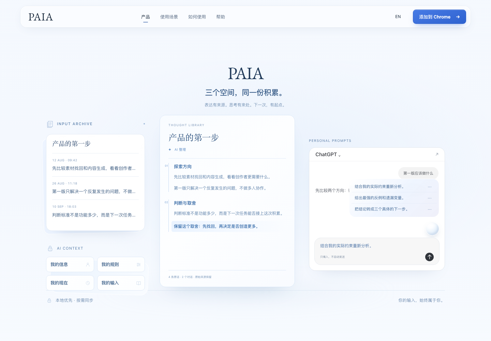
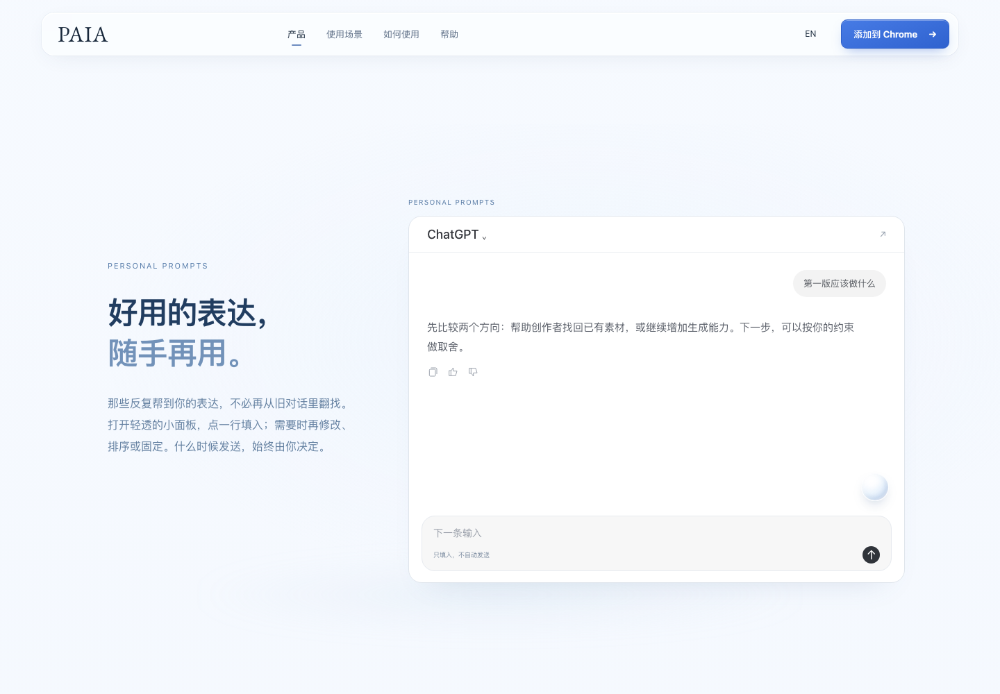
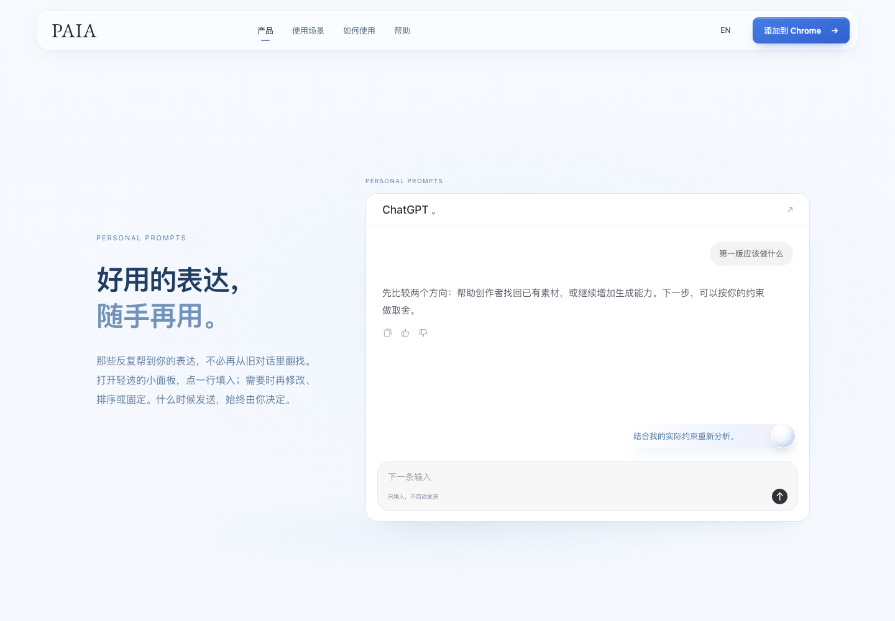
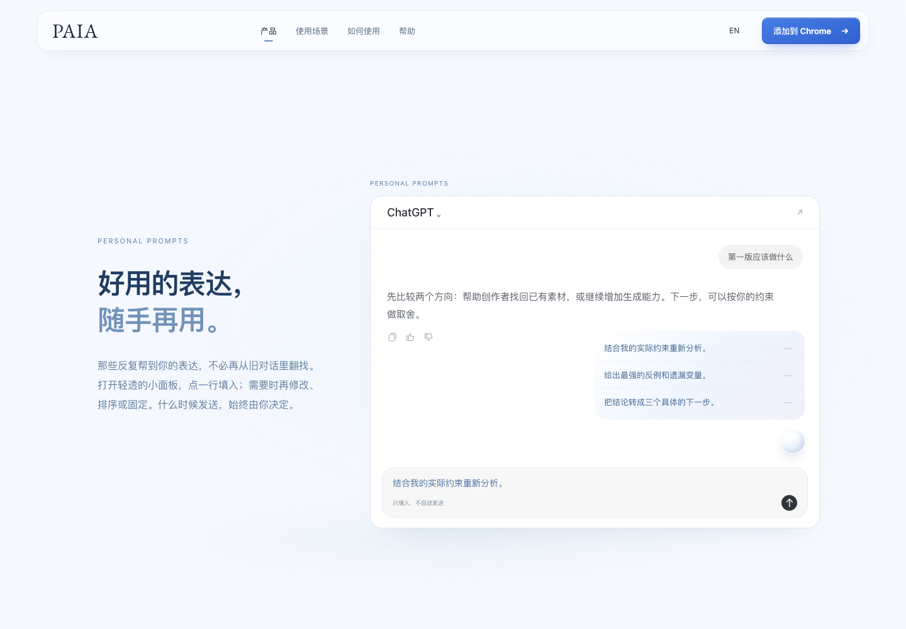

PAIA / THREE ACTS / DESIGN STUDY 01
从一个局部，看到完整的 PAIA。
保留首屏和结尾，中间不再逐段更换页面：同一组产品对象依次展开、聚焦，再回到一张完整的总览。下面是可以直接滚动的真实网页原型，不是静态概念图。
本页是设计审阅工具，不属于官网。正式网站未改动。原型引用当前官网的字体地址；断网时使用系统字体。所有画面使用既有公开示例，沒有私人档案、AI 请求或真实消息发送。
先看最后的画面，再看它怎样形成
左侧留下原话与来源，中央是思考的结构，右侧是再一次使用，左下保留四个 Context 目录。它是一张能力全景，不是假造一个产品里不存在的万能工作台。

三个部分，一次完整观看
ACT 01
原有首屏
保留已认可的标题、产品主视觉和蓝白气质。
ACT 02
连续展开，最终归位
档案 → 主题 → 同框整理 → 表达再用 → 私密目录 → 总览。
ACT 03
原有结尾
总览停稳后自然离开，以原有品牌收尾和获取入口结束。
实际浏览器中的连续过程
录制自下方原型。正式体验由你自己的滚动控制，不会自动播放或跳页。
同一张主题卡片，成为同一个阅读面
悬浮工具在同一个地方长出来



设计规格与其他视图


桌面正常滚动约 3,120px 完成中段，总览保留约 430px 的稳定观看区。手机、平板及减少动态模式使用可读的正常文档，不把桌面缩成看不清的微型截图。这是设计候选，不是正式生产部署或真实产品能力认证。